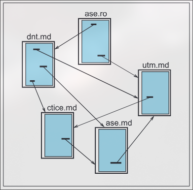

Serviciul WWW

# Pagina Web
Pagina Web este un fişier scris în limbajul HTML şi poate conţine, în afară de informaţii propriu-zise, referinţe la alte pagini Web. Paginile referite se pot afla pe acelaşi calculator sau pe calculatoare situate în diverse puncte geografice.
# Site
Tehnologia de cooperare în cadrul serviciului WWW este de tipul client-server. Utilizatorul care doreşte să ofere publicului larg anumite informaţii instalează pe calculatorul său un program server şi elaborează una sau mai multe pagini Web. Serverul interceptează cererile sosite de la alte calculatoare şi asigură accesul la paginile respective. Calculatorul pe care sunt instalate paginile Web şi serverul WWW se numeşte site (site ‐ sediu, reşedinţă).
Programul client asigură transferul şi afişarea pe ecran a paginilor Web citite de pe diverse calculatoare din Internet. Imediat după pornire, el afişează propria pagină de referinţă (home page ‐ pagina de acasă) şi aşteaptă indicaţiile utilizatorului. Când utilizatorul activează o referinţă, programul client stabileşte o conexiune cu serverul Web şi copiază de la el pagina specificată în referinţă. Pagina copiată este afişată pe ecran.
# Programe de explorare
În continuare, utilizatorul activează o altă referinţă, programul client stabileşte din nou conexiunea cu un calculator din reţea, din nou se va citi o pagină Web etc. Cu alte cuvinte, utilizatorul „răsfoieşte” paginile Web de pe diverse calculatoare, indiferent de poziţia lor geografică. Din acest motiv programele client sunt numite programe de răsfoire sau programe de explorare (în engleză browser sau explorer).
În cadrul serviciului WWW resursele reţelei se specifică cu ajutorul unor adrese speciale, denumite adrese URL (Uniform Resource Locator ‐ Locator Uniform de Resurse). Aceste adrese au forma:
<protocol> :// <Adresă simbolică> [:<port>]/ <cale>/<fişier>
‐ Apasă pe o parte componentă a URL‐lui
Pentru exemplificare, prezentăm câteva adrese URL ce conţin informaţii interesante:
- http://www.mecc.gov.md ‐ site-ul Ministerului Educaţiei, Culturii şi Cercetării, Republica Moldova;
- http://www.ctice.gov.md ‐ site-ul Centrului de Tehnologii Informaţionale şi Comunicaţionale în Educaţie, Republica Moldova;
- https://www.sciencemuseum.org.uk ‐ site-ul Muzeului Ştiinţei din Londra, Regatul Unit al Marii Britanii şi Irlandei de Nord;
- http://www.nasa.gov ‐ site-ul agenţiei NASA, Statele Unite ale Americii.
Amintim că notaţia http specifică protocolul de transfer al hypertextelor (Hypertext Transfer Protocol).
# Serverul de căutare
În prezent, numărul fişierelor din reţeaua Internet este de ordinul miliarde- lor. Evident, nici nu poate fi vorba de căutarea informaţiei necesare prin citirea individuală a fiecărui fişier. Pentru a simplifica căutarea informaţiei, în cadrul reţelei Internet au fost create servere de căutare (search engine).
Serverul de căutare este un calculator puternic care explorează încontinuu reţeaua şi citeşte paginile Web sau alte informaţii prezentate publicului larg. Acestea sunt clasificate în funcţie de datele pe care le conţin, iar adresele lor sunt reţinute în baza de date de pe server.
Programul client adresează serverului de căutare o cerere în care indică de ce fel de informaţii are nevoie. Serverul interoghează baza de date şi transmite clientului o listă de adrese la care pot fi găsite informaţiile cerute.
Pentru exemplificare, amintim serverele de căutare frecvent utilizate:
- http://www.yahoo.com ‐ serverul YAHOO (Yet Another Hierarchically Organized Oracle ‐ încă un oracol organizat ierarhic) al companiei Yahoo! Inc.;
- http://www.google.com ‐ serverul GOOGLE al corporaţiei Google Inc.;
- http://www.bing.com ‐ serverul BING al corporaţiei Microsoft Inc.;
- http://www.yandex.ru ‐ serverul YANDEX al companiei «Яндекс»;
- http://www.infoseek.com ‐ serverul Infoseek al firmei Infoseek Corp.
Accesul la aceste servere este gratuit.